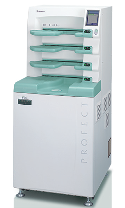

Línea fcr computed radiography
Equipo digitalizador de imagen
Modelos FCR:
FCR Prima II
CARACTERÍSTICAS:
- Capacidad de procesamiento: hasta 55 IPs/hr.
- Dedicado a rayos X general.
- Especificación de lectura: 10 pixeles/mm.
- Dimensiones: 600 x 400 x 780 mm.
- Peso: 70 kg.
FCR Prima T2
CARACTERÍSTICAS:
- Tamaño compacto.
- Capacidad de procesamiento: hasta 73 IPs/hr.
- Dedicado a rayos X general.
- Especificación de lectura: 10 pixeles/mm, 5 pixeles/mm.
- Dimensiones: 560 x 540 x 392 mm.
- Peso: 39 kg.
FCR Prima Tm
CARACTERÍSTICAS:
- Tamaño compacto.
- Capacidad de procesamiento: hasta 73 IPs/hr.
- Dedicado a mamografía y rayos X general.
- Especificación de lectura: 20 pixeles/mm,10 pixeles/mm, 5 pixeles/mm.
- Dimensiones: 560 x 540 x 392 mm.
- Peso: 39 kg.
FCR Cápsula XLII
CARACTERÍSTICAS:
- Capacidad de procesamiento: hasta 94 IPs/hr.
- Dedicado a mamografía y rayos X general.
- Especificación de lectura: 20 pixeles/mm, 10 pixeles/mm, 5 pixeles/mm.
- Dimensiones : 590 x 380 x 810 mm.
- Peso: 99 kg.
FCR PROFECT CS Plus

CARACTERÍSTICAS:
- Capacidad de procesamiento: a 120 IPs/hr.
- Multicarga: 4 bahías.
- Dedicado a mamografía y rayos X general.
- Especificación de lectura: 20 pixeles/mm,10 pixeles/mm, 5 pixeles/mm.
- Dimensiones: 655 x 740 x 1480 mm.
- Peso: 270 kg.
|
|
USOS RECOMENDADOS |
||
|
EQUIPO |
RADIOGRAFÍA GENERAL |
PANTOMOGRAFÍA |
MAMOGRAFÍA |
|
PRIMA II |
|
|
|
|
PRIMA T2 |
|
|
|
|
PRIMA Tm |
|
|
|
|
CÁPSULA XLII |
|
|
|
|
PROFECT CS PLUS |
|
|
|
DATOS COMPLEMENTARIOS: En FUJIFILM de México queremos convertirnos en su mejor aliado, es por eso que estamos comprometidos con nuestros clientes y ofrecemos el mejor servicio posventa.
FUJIFILM DE MÉXICO, S.A. de C.V.
Teléfono: (55) 5263-5500
e-mail: imagenologia@fujifilm.com.mx
www.fujifilm.com.mx